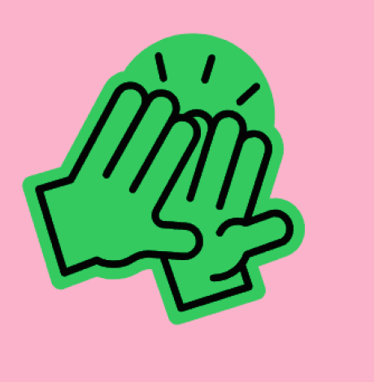
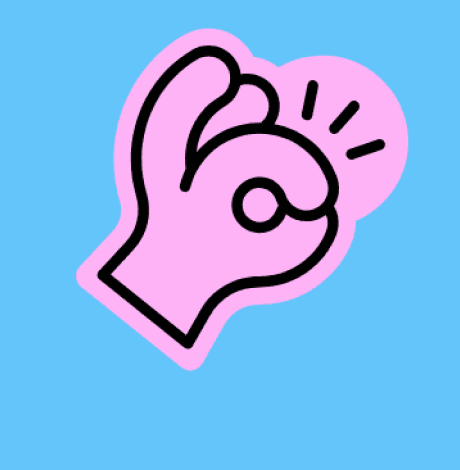
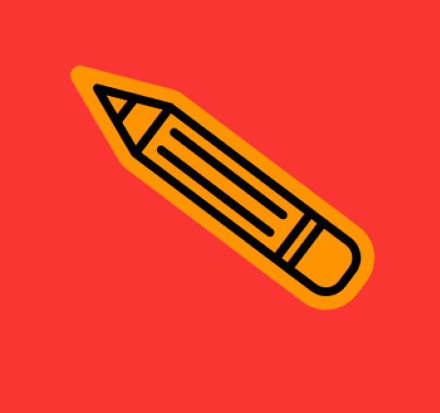
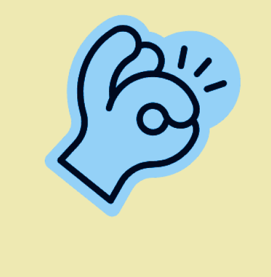

Designer UX/UI e apaixonada por transformar idéias em experiências digitais simples e intuitivas. Atuo do conceito ao protótipo, com apoio em front-end e ilustração.
UX/UI Design
Criando experiências digitais intuitivas, funcionais e centradas no usuário, desde a pesquisa e definição de fluxos até protótipos e interfaces de alta fidelidade.

Design de Interfaces (UI) & Figma
Desenvolvendo interfaces modernas, componentes reutilizáveis e Design Systems no Figma, garantindo consistência visual e uma melhor experiência de uso.

Front-end Development
Transformando designs em experiências reais através de conhecimentos em HTML, CSS, JavaScript, React e Next.js, facilitando a colaboração entre design e desenvolvimento.

Ilustração & Design Visual
Criando elementos visuais, ilustrações e recursos gráficos que fortalecem a identidade dos produtos e tornam as experiências mais envolventes.

Projetos

Um pouco sobre mim
Sou Designer UI/UX com mais de 5 anos de experiência na criação de produtos digitais web e mobile.
Acredito que o design vai além da estética: ele deve resolver problemas, facilitar experiências e gerar valor para pessoas e negócios. Atuo com UX Research, jornadas, fluxos, prototipação, Design Systems e interfaces digitais, utilizando ferramentas como Figma, FigJam e conhecimentos em Front-end para conectar design e tecnologia.
Experiência profissional
UX/UI Designer Pleno
2022 — Atual- Produtos digitais como apps de sócio-torcedor, sistemas financeiros, plataformas de eventos e sistemas internos de gestão, com soluções usadas no Uruguai e no Chile.
- Interfaces para vendas, maquininhas de pagamento, bares de eventos, repasses financeiros e operações administrativas.
- Sites, landing pages e plataformas digitais focadas em conversão e experiência do usuário.
- Jornadas, fluxos, wireframes e protótipos de alta fidelidade no Figma.
- Estruturação e evolução de Design Systems e bibliotecas de componentes.
- Uso de IA (Claude Code e ChatGPT) para otimizar pesquisas, documentação e processos de design.
UX/UI Designer — Estágio
2021- Apoio na criação de aplicativos e sistemas internos, com wireframes e protótipos.
- Pesquisas com usuários e testes de usabilidade, colaborando na validação de interfaces.
- Identificação de oportunidades de melhoria em fluxos de navegação existentes.
Programadora Web — Estágio
2020 — 2021- Desenvolvimento e manutenção de funcionalidades web, incluindo correção de erros e melhorias.
- Trabalho com HTML, CSS, JavaScript, Git e arquitetura MVC.
Formação acadêmica
Tecnólogo em Análise e Desenvolvimento de Sistemas
Universidade do Sul de Santa Catarina (UNISUL) · Concluído 2026
Curso concluído — diploma em processo de emissão.
Técnico em Informática para Internet | Programação para Web
Cedup Diomício Freitas · 2018 – 2020
Curso técnico de três anos com foco em algoritmos, funcionamento da internet (HTTP), bancos de dados relacionais, montagem de computadores e trabalho em equipe.